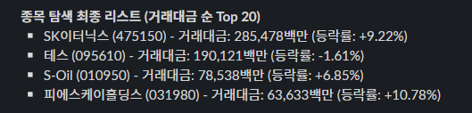
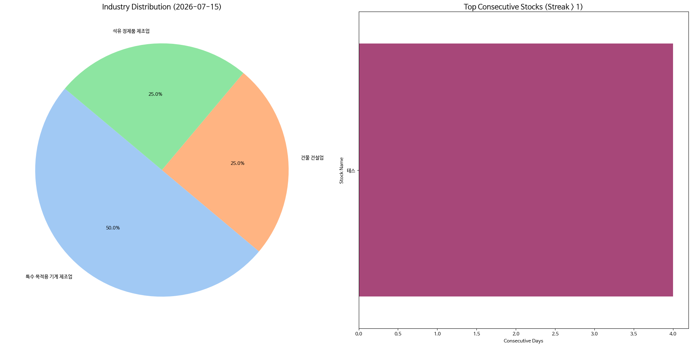

매일의 주도주 정리를 위해 기록합니다.
연속적으로 나온 종목들 또는 상승 후 조정받는 종목 주로 리서치 해보시면 좋을 것 같습니다.

*오늘의 퀀트픽으로는 'SK이터닉스' 입니다.
▶ 메가프로젝트, KKR(3480억원에 지분 43.5% 확보)과 함께 여는 AUM 확장
▶ 2분기 EPC 준공 매출, 점차 쌓여가는 중개사업 수익
▶ FI와의 협력에 따라 AUM이 급격히 확장되면서 동사는 AMC와 같은 비즈니스 모델을 추구할 수 있게 됨
#주도섹터
반도체 메가 테크 및 HBM·고부가 기판 (외인 수급 집중)
주요 종목: 한미반도체(+29.64%), 피에스케이홀딩스(+10.78%), SK하이닉스(+8.42%), 삼성전자(+5.89%), 대덕전자(+21.98%).
분석: 외국인의 2.3조 원 순매수세가 메가 캡과 고부가 HBM 패키징 밸류체인으로 전방위 유입되었습니다. HBM 대장주인 한미반도체가 +29.64%로 상한가 부근까지 폭등했고, 전공정 장비 단에서 피에스케이홀딩스가 +10.78% 급등하며 강한 시세 연속성을 보였습니다. 아울러 반도체 기판 테마(+11.69%) 내 대덕전자(+21.98%)와 심텍홀딩스(+22.26%) 등 고부가 부품군 역시 폭발적인 기관/외인 동반 숏스퀴즈가 유입되었습니다.
낙폭과대 바이오 대형주 및 친환경 에너지
주요 종목: HLB(+29.96%), HLB제약(+30.00%), SK이터닉스(+9.22%), S-Oil(+6.85%).
분석: 지수가 급반등하는 과정에서 그간 수급 꼬임으로 과락했던 대형 바이오주 HLB 진영이 나란히 상한가에 진입했습니다. 에너지 부문에서는 친환경 인프라의 SK이터닉스가 2,854억 원의 두터운 거래대금과 함께 +9.22%로 상방 탄력을 키웠고, 유가 변동성에 노출되었던 S-Oil 역시 +6.85% 상승하며 전일의 강세를 고스란히 이어갔습니다.

코스피 지수는 +6.24% 상승한 7,284로 마감하며 7,200선 위로 단숨에 복귀했습니다. 코스닥 지수 역시 +5.80% 상승한 829을 기록하며 820선을 탈환했습니다.
유가증권시장에서 외국인이 무려 2조 3,224억 원, 기관이 1,824억 원을 동반 순매수하며 상방 드라이브를 걸었습니다.
연속종목으로 테스(4회) 출현했습니다.
세계적인 사모펀드가 투자한 신재생에너지 강자, SK이터닉스는 어떤 회사일까?
① 어떤 회사인가요?
SK이터닉스(코스피 475150)는 2024년 SK디앤디에서 갈라져 나온 국내 최대 민간 신재생에너지 '디벨로퍼'예요. 디벨로퍼란 쉽게 말해 태양광·풍력 같은 발전소를 직접 기획하고, 짓고, 운영하고, 거기서 나온 전기까지 사고파는 회사입니다. 발전소 하나를 처음부터 끝까지 통째로 책임지는 종합 사업자인 셈이죠. 최근 이 회사가 크게 주목받은 계기는 세계적인 사모펀드 KKR이 3,480억 원을 들여 지분 43.5%를 확보한 사건이에요. 이 소식과 에너지 안보 이슈가 겹치며 주가는 3월 저점 대비 약 3배 급등했다가, 현재는 고점 대비 조정을 받은 상태입니다.
② 무엇을 팔아서 돈을 버나요?
사업은 크게 태양광·풍력·연료전지·ESS(에너지 저장장치), 그리고 전력 중개 다섯 갈래예요. 돈을 버는 방식이 두 종류로 나뉘는 게 특징입니다. 하나는 발전소를 짓는 공사(EPC)로 한 번에 크게 버는 돈이고(신안우이 해상풍력 등), 다른 하나는 발전소를 운영하고 전기를 오래 팔아 꾸준히 들어오는 돈이에요. 실적을 보면 2026년 매출이 약 5,541억 원으로 1년 전보다 44% 늘 전망인데, 주의할 점은 분기별 실적 출렁임이 매우 큽니다. 큰 공사 매출이 특정 분기에 몰려서 잡히기 때문에, 어떤 분기는 2,600억이고 어떤 분기는 275억일 만큼 널뛰어요. 그래서 한 분기 숫자만 보고 판단하면 안 되는 회사입니다.
③ 핵심 강점(해자)은 무엇인가요?
가장 큰 무기는 "돈을 얼마나 끌어올 수 있느냐가 곧 실력"이라는 디벨로퍼 사업의 본질에 있습니다. 발전소를 많이 지으려면 막대한 자금이 필요한데, 이번에 KKR이라는 거대한 자금줄이 붙으면서 참여할 수 있는 프로젝트의 규모 자체가 달라졌어요. 예전엔 연 300~400MW 수준이던 개발 규모가 앞으로 'GW급'(약 10배)으로 커질 여지가 생긴 겁니다. 여기에 두 가지 강점이 더해집니다. 첫째, 개발부터 공사·운영·전력거래까지 한 회사가 다 하기 때문에 중간에 이익을 뺏기지 않아요. 둘째, 발전소를 지을 좋은 땅과 전력망 연결 지점을 미리 선점해둔 것 자체가 후발주자가 따라올 수 없는 희소 자산입니다. 특히 AI 데이터센터·반도체 공장이 늘며 전기 수요가 구조적으로 커지는데, SK그룹의 데이터센터 전력 공급을 이 회사가 맡을 것으로 기대되는 점이 든든한 뒷배예요.
④ 조심해야 할 점(리스크)은요?
기대가 큰 만큼, 이 회사는 재무 위험이 가장 중요한 관전 포인트입니다. 첫째, 발전소를 사들이고 지분에 투자하느라 빚이 빠르게 늘었어요. 1분기 단기차입금이 1년 전보다 10배 넘게 급증했고 부채비율이 419%에 달해, 영업은 잘하는데도 이자 부담 탓에 순이익은 적자로 돌아섰습니다. 실제로 신용등급도 한 단계 내려갔어요. 둘째, 주가가 이미 많이 올랐습니다. 이익 대비 주가(PER)가 57배로 높아, 실적이 기대에 못 미치면 되돌림 폭이 클 수 있습니다. 셋째, KKR과의 합작법인(JV) 구조가 아직 확정 전이라, 이 과정에서 새 주식이 발행되면 한 주 가치가 묽어질 수 있어요. 결국 이 종목의 핵심 질문은 "성장 스토리를 믿느냐"가 아니라 "KKR의 자금이 언제 실제로 들어와 이 빚 부담을 덜어주느냐"입니다. 그 시점이 확인되기 전까지는 추격보다 조정 시 나눠 접근하는 자세가 필요합니다.
모처럼 외국인 수급과 함께 이틀 연속 시장이 반등했습니다.
금융위기 이상으로 국내 증시가 역대급 조정을 맞은 만큼 밸류에이션상으로는 더 나빠질 여지가 없다고 생각합니다.
다만 하락폭이 컸던 만큼 반등 시 매도 물량들이 나오면서 기간 조정이 필요해 보입니다.
오늘 하루도 수고하셨습니다.